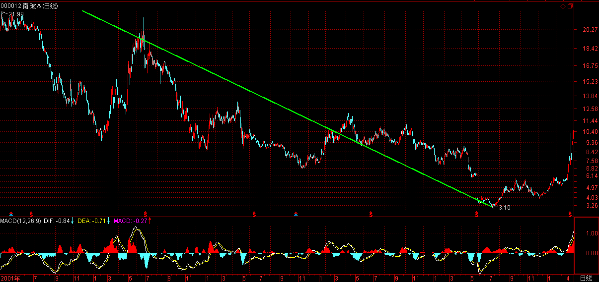
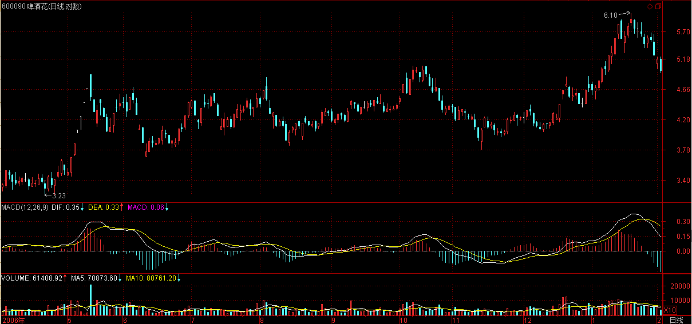

(2007-02-02 15:11:27)
趋势，一定有至少两个同级别中枢，对于背驰来说，肯定不会发生在第一个中枢之后，肯定是至少是第二个中枢之后，对于那种延伸的趋势来说，很有可能在发生第100个中枢以后才背驰，当然，这种情况，一般来说，一百年见不到几次。
第二个中枢后就产生背驰的情况，一般占了绝大多数的情况，特别在日线以上的级别，这种就几乎达到90%以上，因此，如果一个日线以上级别的第二个中枢，就要密切注意背驰的出现。而在小级别中，例如1分钟的情况下，这种比例要小一点，但也是占大多数。一般4、5个中枢以后才出现背驰的，都相当罕见了。【韶山映山红】越大级别越难以趋势延伸。】
如果在第一个中枢就出现背驰，那不会是真正意义上的背驰，只能算是盘整背驰，其真正的技术含义，其实就是一个企图脱离中枢的运动，由于力度有限，被阻止而出现回到中枢里。【韶山映山红】第一个中枢就出现背驰，应该是离开段对进入段的背驰。这时候的缠论还没有强调离开段必须有第三类买卖点，所以这里说的盘整背驰包括a+A盘整背驰和a+A+b盘整背驰。盘整背驰之后的标准走势是“回到中枢里”。】
一般来说，小级别的盘整背驰，意义都不太大，【韶山映山红】这里对应趋势背驰，笼统地说盘整背驰，没有特指哪一种类型。可以认为三种都一样。】而且必须结合其位置，如果是高位，那风险就更大了，往往是刀口舔血的活动。【韶山映山红】高位的小级别的盘整背驰也容易小转大引起转折。小转大的盘整背驰，三种情况都有。】但如果是低位，那意义就不同了，因为多数的第二、三类买点，其实都是由盘整背驰构成的，【韶山映山红】“多数的第二、三类买点，其实都是由盘整背驰构成的，”这个“盘整背驰”是指abc盘整背驰，因为“一般来说，第二、三类的买点，都有一个三段的走势，第三段往往都破点第一段的极限位置，从而形成盘整背驰”。】而第一类买点，多数由趋势的背驰构成。【韶山映山红】“趋势的背驰”，一买并不介意是趋势背驰还是趋势的盘整背驰。另外，这一句话说明有些一买是由盘整背驰构成。】
一般来说，第二、三类的买点，都有一个三段的走势，第三段往往都破点第一段的极限位置，从而形成盘整背驰，【韶山映山红】这里说的盘整背驰是abc盘整背驰。一般来说，第二、三类买点的回踩走势都是三段盘整走势类型。】注意，这里是把第一、三段看成两个走势类型之间的比较，这和趋势背驰里的情况有点不同，【韶山映山红】这里说的“情况有点不同”是指什么？★以后研究。】这两个走势类型是否一定是趋势，都问题不大，两个盘整在盘整背驰中也是可以比较力度的。【韶山映山红】为什么说“两个盘整在盘整背驰中也是可以比较力度的”？两个盘整在趋势背驰中也可以比较力度啊，a+A+b+B+c的连接段b、c并不限定是什么走势类型啊。★以后研究。】
这里，先补充一个定义，就是在某级别的某类型走势，如果构成背驰或盘整背驰，就把这段走势类型称为某级别的背驰段。
盘整背驰最有用的，就是用在大级别上，特别是至少周线级别以上的，这种盘整背驰所发现的，往往就是历史性的大底部。配合MACD，这种背驰是很容易判断的。【韶山映山红】从下面所说的实例来看，这里说的盘整背驰是指abc盘整背驰。】
这种例子太多，例如000002，谁都知道该股是大牛股，但这牛股的底部，如果学了本ID的理论，是谁都可以发现的。【韶山映山红】000002万科A】
请看该股的季线图，也就是三个月当成一个K线的图。
1993年第一季度的36.7元下跌到1996年的第一季度的3.2元，构成第一段，刚好前后13季度，一个神奇数字；【韶山映山红】现在的数据，第一季度的高点不是36.70元，而是32.80元。】
1996年的第一季度然后到2001年第三季度的15.99元，构成第二段，一个典型的三角形，中枢的第二段出现三角形的情况很常见，前后23季度，和21的神气数字相差不大；【韶山映山红】调整中枢的第二段是反弹，三角形结束将调整；反弹中枢的第二段是调整，三角形结束将反弹。那么，中枢第二段出现的三角形就是一个中继的标志吗？★以后研究。】
2001年第三季度下跌到2005年的第三季度的3.12元，前后刚好17周，神奇数字34的一半，也是一个重要的数字。【韶山映山红】这里对中枢的三段划分的依据何在？★这里的划分更符合MACD的走势。如果做笔中枢划分，不是这样的，如下图。】
第一段跌幅是33.5元，第三段是12.87元，分别与神奇数字34和13极为接近。因为13的下一个神气数字是21，加上前面说过的17，都不可能是第三段的跌幅，因此，站在这种角度，万科的2.99元附近就是铁底了。【韶山映山红】15.99-13.00=2.99。为什么21、17“都不可能是第三段的跌幅”？★以后研究。】
【韶山映山红】三段走势的时间跨度分别是13、23、17，分别被解读为神奇数字13、和21的神气数字相差不大、神奇数字34的一半。三段走势的价格跨度分别是33.5元（现在的数据是29.6元）、12.79元、12.87元。
关于神奇数字和股市的关联，缠中说禅没有正式的定义和说明，感觉更像是先验逻辑，而不是缠中说禅所推崇的客观数学。缠论还有其他一些内容也暂时只能归属于神秘的先验逻辑。】
【韶山映山红】有同学说这里的神奇数字指的是斐波纳契数列，不是什么先验之类的。什么是先验？什么不是？可能大家的定义有点区别。缠师在前面的问答里说过，“什么正态分布之类的东西，都是有其逻辑前提的，你要用所谓的正态分布，首先要证明股市是符合这种逻辑前提的，”这里的神奇数字指的是斐波纳契数列，没有问题，问题是，正如缠师自己所说的，需要先要证明股市是符合斐波纳契数列这种逻辑前提的，但是没有人给出证明来，所以我说是先验之类的。缠师也在下文说“这种数字分析意义不大”，可见这些内容并不属于缠论的主体内容。★以后研究。】
不过这种数字分析意义不大，最简单的判断还可以用MACD来，第三段跌破第一段的3.2元，但MACD明显出现标准的背弛形态：回抽0轴的黄白线再次下跌不创新低，而且柱子的面积是明显小于第1段的，一般来说，只要其中一个符合就可以是一个背弛的信号，两个都满足就更标准了。【韶山映山红】缠师在这里说“只要其中一个符合就可以是一个背弛的信号，两个都满足就更标准了。”但实际的分析中应该反过来用，两个都满足的时候可以相对放心的认可背驰，只有一个满足的时候要小心的分析次级别的情况，有可能不是本级别的背驰，只是次级别的，而次级别的背驰就可能会造成本级别看上去背了又背的现象。】
从季度图就可以看出，万科跌破3.2元就发出背弛的信号。而实际操作中，光看季度线是不可能找到精确的买点的，但对大资金，这已经足够了，因为大资金的建仓本来就是可以越跌越买，只要知道其后是一个季度级别的行情就可以了。【韶山映山红】缠师在这里说“大资金的建仓本来就是可以越跌越买”，从另一个角度，等于是认可某级别的背了又背的现象存在。这也是不等最终结果、靠背驰判断提前下手需要承担的风险吧？所以缠师也建议小散做二买更靠谱，也是为了规避这样的风险？★以后研究。】
而对于小资金来说，这太浪费时间，因此精确的买点可以继续从月线、周线、日线、甚至30分钟一直找下去，如果你的技术过关，你甚至可以现场指出，就在这1分钟，万科见到历史性大底部。因为季度线跌破3.2元后，这个背驰的成立已经是确认了，而第三段的走势，从月线、周线、日线等，可以一直分析下去，找到最精确的背驰点。【韶山映山红】新低，进入背驰段，然后区间套定位。这里明确了区间套分析的是“第三段的走势”。】
【韶山映山红】月线。结构和季度线是一样的，MACD的图形不一样，季度线的更符合背驰判断。】
【韶山映山红】月线。依照缠师的说法，第三段是2001年9月到2005年7月。】
【韶山映山红】周线。】

【韶山映山红】日线。】
学过数学分析的，都应该对区间套定理有印象。
这种从大级别往下精确找大级别买点的方法，和区间套是一个道理。以万科为例子，季度图上的第三段，在月线上，可以找到针对月线最后中枢的背驰段，而这背驰段，一定在季度线的背驰段里，而且区间比之小，把这个过程从月线延伸到周线、日线、30分钟、5分钟、1分钟，甚至是每笔成交，这区间不断缩小，在理论上，甚至可以达到这样一种情况，就是明确指出，就这一笔是万科历史底部的最后一笔成交，这成交完成意味着万科一个历史性底部的形成与时代的开始。
当然，这只是最理想的情况，因为这些级别不是无限下去的，因此，理论上并不能去证明就是一个如极限一样的点状情况的出现，但用这种方法去确认一个十分精确的历史底部区间，是不难的。
推而广之，可以证明缠中说禅精确大转折点寻找程序定理：某大级别的转折点，可以通过不同级别背驰段的逐级收缩范围而确定。【韶山映山红】“逐级收缩范围”，随着级别的降低，范围也要缩小。如果是当下的走势做区间套分析，就有可能某个小级别还没有出现相应的背驰段。】
换言之，某大级别的转折点，先找到其背驰段，然后在次级别图里，找出相应背驰段在次级别里的背驰段，将该过程反复进行下去，直到最低级别，相应的转折点就在该级别背驰段确定的范围内。
如果这个最低级别是可以达到每笔成交的，理论上，大级别的转折点，可以精确到笔的背驰上，甚至就是唯一的一笔。（当本ID十几年前发现这个定理时，有一个坏毛病，总是希望在实际操作上也精确到笔，因此还发明了其他古怪的看盘方法，不过这些其实都意义不大，1分钟的背驰段，一般就是以分钟计算的事情，对于大级别的转折点，已经足够精确了，对大资金，基本没什么用处。）【韶山映山红】学习缠论大多都是回顾历史案例，马后炮总是轻而易举地一眼看穿买卖点，当下的操作不可能追求精确到1分钱，那么，如何确定买卖点的交易区间？今天学到这里才明白，缠师早就说得很清楚了。找精确的买点，就是用区间套的方法不断的找低级别的背驰段，这个段的范围就是买卖点的区间。缠师说的“精确到笔”是指成交的每一笔，不是笔线段的那个笔。我们的操作可以试着精确到“1分钟的背驰段”，也就是笔线段的笔级别。】
要理解本章，如果忘了的，最好把高数里的区间套定理复习一下，这个思路是一样的，当然，由于级别不是无限可分的，不可能达到数学上唯一一点的精度。各位有时间可以参考一下，
600640、【韶山映山红】600640中卫国脉，2012-09-03变更为号百控股。】
000001、【韶山映山红】000001深发展A，2012-08-02变更为平安银行。】
000006、【韶山映山红】000006深振业A】
000009、【韶山映山红】000009深宝安A，2008-05-16变更为中国宝安。】

000012、【韶山映山红】000012南玻A】


600643【韶山映山红】600643爱建股份，2015-09-09变更为爱建集团。】
的季度图，看看历史底部是怎么形成的。
当然，只有特别老的股票才可以用季度图。而月线图的，看600663、一个标准的例子。【韶山映山红】600663陆家嘴。】
上面说的是背驰构成的买点，注意，第一类买点肯定是趋势背驰构成的，而盘整背驰构成的买点，在小级别中是意义不大的，所以以前也没专门当成一种买点，但在大级别里，这也构成一种类似第一类买点的买点，因为在超大级别里，往往不会形成一个明显的趋势，这也就是以前回帖曾说过的，站在最大的级别看，所有股票都只有一个中枢，因此，站在大级别里，绝大多数的股票都其实是一个盘整，这时候就要用到这因为盘整背驰而形成的类第一类买点了。【韶山映山红】这里说的“类第一类买点”是线段类盘整背驰的一买。同级别分解的情况下，盘整走势类型的起止点也是这样的类第一类买卖点。后期课程的类买点是指１分钟以下级别的非走势类型的买点。】
这个级别，至少应该是周线以上。
类似的，在大级别里，如果不出现新低，但可以构成类似第二类买点的买点，在MACD上，显示出类似背驰时的表现，黄白线回拉0轴上下，而后一柱子面积小于前一柱子的。【韶山映山红】这里说的“类第二类买点”是线段类不创新低、力度盘整背驰的二买。后期课程的类买点是１分钟以下级别的买点。】
一个最典型的例子，就是季度图上的600685，2005年的第三季度的2.21元构成一个典型的类第二类买点。
【韶山映山红】600685中船防务。大级别不创新低的二买。季线图。】
在实际操作中，2.21元的相应区间的寻找，也是按上面级别逐步往下找背驰段的方法实现。【韶山映山红】区间套的方法。】
【韶山映山红】600685中船防务。周线图。】

【韶山映山红】600685中船防务。日线图。】
这一课，把找大牛市底部的一个方法说了，这个方法足以让你终生受用。随着以后股票越来越多，老股票越来越多，这种方法将在下一轮大牛市中大放异彩，这大牛市搞不好是30年以后的事情了，30年以后，希望你还能记得这一课。
当然，如果按照周线级别，那不用等30年了。不过，周线找出来的，不一定是历史性大底，可能就是一个比较长线的底部。
如果把这种方法用在日线上，也是可以的，但相应的可靠性就不是那么绝对了。
（待续）
补充一个本ID理论的学历标准
精通找出各级别中枢的，是幼儿圆毕业
精通分别中枢的新生、延伸、扩展的，是学前班毕业
精通分辨盘整背驰与背驰，躲过盘整背驰转化为第三类买卖点的，是小学毕业
各位自己对照一下。
【韶山映山红】补充这段文字的的时间是2007-2-2 15:42】
【韶山映山红】如果盘整走势类型的是盘整背驰，趋势走势类型的是背驰，那么，傻瓜都会分辨，还需要“精通分辨”吗？ 盘整背驰的那个顶点，理论上能够预测第三类买卖点的出现吗？不能。缠论不预测。也就是说，要等返回段内部背驰的时候，我们才知道是不是第三类买卖点。那么，什么时候要“躲过”？“躲过”什么东西？】
今天走势十分正常，昨天已经说了，1分钟的背驰和上次的不会一样，都一样还叫走势吗？
现在，就让那些看所谓技术的人喊跌破颈线砍仓去吧，市场永远是智慧赚愚蠢的钱，他们不砍仓，钱从哪里来。
按照本ID理论的，这种走势是最好的，比上涨还容易挣钱，关键是卖点要走，看准了买点才进。下周会有一个5分钟的买点出现，抓住了10%的利润是跑不掉的。

整个周线的中枢还在形成中，这种震荡将不断，是练习本ID理论的绝佳场所，好好练习，这个场所可是用钱堆出来的。
至于本ID所说的个股，本ID一样按照理论来操作，绝对不会举着，那是傻瓜的作法，震荡才能产生利润，才能把成本降下来。
2007-2-2 15:19
[匿名] 乐土 2007-02-02 15:19:05
缠师:这一轮大牛市基本走完?
===
这轮牛市的第一段都没走完，什么叫基本走完？一个周线的调整很正常，又不是今天才说的。这个调整的级别最多就是去年5月到8月那个，8月以后是什么？【韶山映山红】事后证明，这一波震荡形成的中枢只是日线级别的，之前5月到8月那个中枢是周线级别的。】
2007-2-2 15:20
[匿名] 密码 2007-02-02 15:26:13
感觉涨停板对背驰的判断还是有干扰，比如今天600668开盘半小时那一段，在5分钟图上该看作背驰吗？【韶山映山红】600668尖峰集团。】
==
不算，1分钟算。

【韶山映山红】5分钟只是一个上涨走势，1分钟才有对比段。涨停导致的畸变不影响1分钟的判断。】
2007-2-2 15:30
[匿名] 乐土 2007-02-02 15:29:26
缠师,谢谢! 再请教:中信证券600640 今天是30分钟假背池吗?还要象猎人等背池买入点?谢
【韶山映山红】600030中信证券。代码笔误，600640中卫国脉，2012-09-03变更为号百控股。】
===
背驰就是背驰，没有什么假背驰，错了是因为你判断错了，最多错误都是发生在把盘整背驰转化为第三类买卖点给搞成背驰了。能把这关过了，你的水平可以上初中了。
【韶山映山红】a+A+b中枢盘整背驰，中枢离开段盘整背驰之后回踩、形成三买，然后继续上涨。】
2007-2-2 15:31
[匿名] 东山 2007-02-02 15:27:35
说禅姑娘，关于一些缠中说禅定理的证明，有时间您能给写一下吗
==
有些定理，自己都可以证明，你能证明，就证明你的理解够深刻了，所以这是一个很好的练习。例如今天这个，就是很好的例子。
2007-2-2 15:33
[匿名] 咻咻 2007-02-02 15:25:35
请问600177今天14:40是否形成了15分钟线的标准背驰,我的判断对吗,谢谢
【韶山映山红】600177雅戈尔】
==
错，只是一个比1分钟还低的背驰。
2007-2-2 15:38
[匿名] 罗锅 2007-02-02 14:19:55
这一下很关键！如果拉不起来就是第三类卖点！因为数学妹妹说过啦！盘整背驰有可能演化成第三类的买卖点！这一定要看清楚！
[匿名] 罗锅 2007-02-02 15:36:27
数学妹妹！俺要大红花！俺今天连盘整背驰都没骗过俺！俺可以上初中了吗？俺我的现场评论！
===
你小学毕业了，以后虚心点，后面的路长着了。
2007-2-2 15:39
大家注意了
这里给大家一个学历标准
精通找出各级别中枢的，是幼儿圆毕业
精通分别中枢的新生、延伸、扩展的，是学前班毕业
精通分辨盘整背驰与背驰，躲过盘整背驰转化为第三类买卖点的是小学毕业
2007-2-2 15:42
[匿名] 惑 2007-02-02 15:42:33
请说一下中国人寿好么 【韶山映山红】601628中国人寿。】
==
这以前早说过了，去形成下跌的第二个中枢。
该股在49元那次上涨背驰出来后，本ID就从来没提过了，因为该股要等待一个下跌的背驰出现，出现以后就可以重新介入了，那次，行情就小不了了，本ID也在等着，希望能见到30元附近的价位。
中线，N年以后看，复权上100是没问题的，不过要耐心等待背驰的出现。
2007-2-2 15:47
[匿名] 夜雨 2007-02-02 15:44:21
美女姐姐，我总结一下今天的操作，卖都是对的，没找好买点，买都是错的，一定要看清楚了才下手，可今天买点好难找啊，
==
谁告诉你每天都一定有买点的？
在强烈的趋势中，1分钟的买点有时候2、3天才有一个。【韶山映山红】有走势类型的完成才有一买卖点、二买卖点，有中枢的完成才有三买卖点。换句话说，没有折腾就没有买卖点。】
不过5分钟的买点正形成中，对于大资金以及好股票，其实今天就可以开始部分介入了。
2007-2-2 15:49
[匿名] 小鸟 2007-02-02 15:50:16
妹妹，今天600331在下午13：50我觉得应该是背驰，但是却继续下跌，那么收盘前10分钟是背驰吧？但是虽然绿柱子比早上10点的高，均线却更低，这是怎么回事呀？我还没上幼儿园呢，哭~。补充一下，是5分钟上的 【韶山映山红】600331宏达股份。】
==
背驰和均线没关系。
说背驰，你首先要说级别，否则无从说起。
【韶山映山红】此处是5分钟的背驰段没错，但是下手早了，之前用了1天的时间走完第一段下跌，又盘整了一天，黄白线刚拉回0轴，虽然2日这一天也是一天的下跌，开始背驰段了，但黄白线二次下探刚展开，可以等它完成。】
2007-2-2 15:55
[匿名] 炼铁设备 2007-02-02 15:54:58
帮帮我!今天416一分钟图:从2月1日的4.30---2月2日的4.73这个上下上的过程是产生了背驰?
【韶山映山红】000416健特生物，生产脑白金。2008-01-06变更为华馨实业，2008-12-30变更为民生投资，2014-04-14变更为民生控股。】

==
有些敏感的股票，本ID就不评论了，免得被人说又当裁判又当运动员。自己去分析，或者互相分析。
2007-2-2 15:58
[匿名] 乐土 2007-02-02 15:57:57
缠师:我想既然学您的理论,就应该去另外选一只去磨练.您看中信600640或者深发展可以吗?我想象猎人一样等待第一买点的到来.今天,我几次想买,但想到与缠中说禅买点原则不符合,才没冲动.谢
【韶山映山红】600030中信证券。】
【韶山映山红】600640中卫国脉，2012-09-03变更为号百控股。】
【韶山映山红】000001深发展A，2012-08-02变更为平安银行。】

==
不熟练的时候，最好找一些刚突破底部的，业绩不差的，这样安全点，
2007-2-2 15:59
[匿名] 锅贴 2007-02-02 15:57:01
靓女lz.我的600090惨了.帮我看看还能不能持好吗?谢谢
【韶山映山红】600090啤酒花。2016-08-08变更为同济堂】

==
找一个买点进去弄短线，这有什么惨的？你技术好点，震荡就可以挣很多钱，怕什么？
2007-2-2 16:02
[匿名] 第一次实战 2007-02-02 15:55:45
今天终于鼓起勇气，按照lz理论进行了第一次实战。目标是宝钢，15分钟K线下午两点出现明显背驰，买入后宝钢马上强烈反弹，2％的幅度。
【韶山映山红】600019宝钢股份。】
转而观察低级别5分钟，1分钟K线，是否有卖点出现。
可虽说无卖点出现，但是由于大盘忽然转弱，走势急转而下（5分钟1分钟K线均无出现卖点），5分钟再次出现男上位缠绕。按照lz所示，应严守纪律退出，这是是正好盈亏为0。但是初次实战，犹豫了一下，走势急转下跌，－2％，于是坚定退出。再次等待机会。
结语：任何走势都是无定的，严守纪律，给操作戴套。
===
你知道你的操作为什么有问题吗？
首先，你对背驰的判断是错误的，宝钢15分钟根本没有背驰，更谈不上标准。黄白线都没拉回去，怎么可能有背驰？【韶山映山红】从5分钟图上看，前面是小级别趋势下跌，这里考虑要出现更大级别盘整，所以一个abc盘整背驰的区间套也还不足以判断转折。】

该背驰是典型的1分钟背驰，3波拉上去后就是一个完美的卖点，【韶山映山红】从1分钟图上看，最后一个abc盘整背驰的一段走势，实际上是个下跌趋势。趋势背驰之后三段反弹。这个反弹在1分钟级别上看很到位，但在5分钟级别看就反弹不力了。】
为什么？因为这卖点要看次级别的，而1分钟下面看不到，所以一般来说，3波上去就可以走，【韶山映山红】1分钟趋势的盘整底背驰，然后三段反弹，越过趋势的最后一个中枢。此时怎么知道不是就此走出反趋势？★以后研究。】三段反弹之后的向下段力度过大了，属于小转大，所以可操作的是二卖离场。】而且刚好碰到250的1分钟均线，最好的对冲出逃机会了。【韶山映山红】1分钟图上的MA250跟年线一样有参考价值。】

好好总结，继续来。
2007-2-2 16:09
[匿名] 第一次实战 2007-02-02 16:18:08
你知道你的操作为什么有问题吗？首先，你对背驰的判断是错误的，宝钢15分钟根本没有背驰，更谈不上标准。黄白线都没拉回去，怎么可能有背驰？该背驰是典型的1分钟背驰，3波拉上去后就是一个完美的卖点，为什么？因为这卖点要看次级别的，而1分钟下面看不到，所以一般来说，3波上去就可以走，而且刚好碰到250的1分钟均线，最好的对冲出逃机会了。好好总结，继续来。
--------
谢谢楼主。学艺不精，继续努力。
==
注意，是涨的时候形成卖点，而不是跌下来再走。
宁愿卖早了，不要卖晚了。
特别是对冲。【韶山映山红】“对冲”操作就是打短差。】
2007-2-2 16:19
[匿名] 糊涂 2007-02-02 16:16:00
缠姐姐 你好。600879(火箭股份)今天15分钟线10:45的macd产生背弛,可是下午14:30的macd又发生背弛,这种情况该如何判断?
【韶山映山红】600879火箭股份。2009-10-30变更为航天电子。】
====
因为你小学没毕业，看看这标准：精通分辨盘整背驰与背驰，躲过盘整背驰转化为第三类买卖点的是小学毕业。
继续努力。
2007-2-2 16:22
[匿名] 小注 2007-02-02 16:19:50
禅主，601628是否30分钟背弛，36元我进了，请你给看看好吗！
【韶山映山红】601628中国人寿。】
==
错，黄白线没拉回0轴前是不会有背驰的。最多是正在形成1分钟的背驰。
2007-2-2 16:27
[匿名] 缠文观止 2007-02-02 16:26:15
缠MM您好，再次提问：
理论感觉学得清楚了点，可一看实际图，级别问题总是没把握。
均线过滤出来的高低点的级别又不绝对，只是参考。
完全按理论推导吧，一层一层的往下，对高低点的级别很难确定，特别是中枢扩张时。
有没有比较精确明了的办法确定一段走势上高低点或中枢的级别呢？
==
很简单的，你先把一个级别看明白再说其他，否则就乱套了。
2007-2-2 16:30
[匿名] 小注 2007-02-02 16:30:02
禅主601628是否30分钟背弛了吗
==
上面已经回答了，请看清楚。
2007-2-2 16:33
[匿名] 乐土 2007-02-02 16:27:57
缠师:"躲过盘整背驰转化为第三类买卖点的"----------我今天进的人寿,不是在第一买点买的.我下周找第三类卖点.可以吗?
==
第一类买点多了去了，关键是级别，这必须要有这个概念。
精通找出各级别中枢的，是幼儿圆毕业
2007-2-2 16:34
[匿名] 惑 2007-02-02 16:34:40
刚学习,得到一个体会:预测大盘或个股的高点低点没有意义,只要出现买卖点就可以操作,下跌趋势中的买点要比卖点级别高一些才有效,上升趋势中的卖点要比买点级别高.不知道对么?
另外0993今天下午13:55形成的卖点没有卖出,是不是错失了机会?
【韶山映山红】000993闽东电力。】
==
不是今天下午，而是31日，看看30分钟图。
2007-2-2 16:37
[匿名] 小鸟 2007-02-02 16:23:54
请问我的理解对不对呀？妹妹，600331宏达股份在5分钟上在13:15到14:00只有一个中枢，所以还没形成趋势，需要继续下跌形成第二个中枢，有了趋势才能和前一个趋势对比，是不是这样呀？
【韶山映山红】600331宏达股份。】
===
5分钟中枢在昨天就形成了，01 09:35到01 14:10，，01 09:35前面是一段，01 14:10后面是一段，这两段就可以比较了。
2007-2-2 16:40
[匿名] 小注 2007-02-02 16:40:50
禅主601628中国人寿是15分钟黄白线拉回0轴一次！是否15分钟背弛！
【韶山映山红】601628中国人寿。】
==
这是一个条件，还有必要看其后股价新低后是否创新低，更精确的判断，可以参考5分钟的图。也就是这个背驰段什么时候结束。
2007-2-2 16:43
[匿名] 巴索林 2007-02-02 16:43:38
LZ，请分析下600316把，我25元的成本，严重套牢了，怎么把啊
【韶山映山红】600316洪都航空。】
==
下面找一个买点摊一下，很快可以解套的。【韶山映山红】低位补仓摊薄成本，然后用不到仓位打短差。】

2007-2-2 16:46
[匿名] 清 2007-02-02 16:00:50
先谢谢“本ID”对我昨天提出问题的回答。非常谢谢。今日手上N多股票都暴跌，国安，水酒和管子都挨了一刀。水酒“本ID"是不是不要啦？既然错过了卖点。也只能坐坐升降机了。既然牛市行情还会延伸，就先学点技术。
问点关于技术既问题：背驰是否能理解成黄白线回抽O轴的前后两段趋势，再MACD上映射既面积比较，当然还有黄白线是否也创出新低（高）的区别，而且回抽前的面积内会否也出线黄白线的回抽。就是指短时间内多次出现黄白线在0轴缠绕的情况？
谢谢。。呵呵。。
===
本ID不是早说了，前期一直在出消费类的换农业、军工等，消费类，中期调整后会创新高的。
可以利用震荡把成本降低。
2007-2-2 16:49
周末了，找一个小时去找找自己吧，找不到自己，又怎能不让股票所转？转股票，而不要被股票转。
先下，周日中午开音乐会，再见。
2007-2-2 16:55
(2007-02-04 14:39:23)
名实不符，并不意味着作品一定不好，只是让重名轻实的人多犯点糊涂。对于一般的音乐爱好者来说，最熟悉的音乐流派就是古典与浪漫了。而音乐历史上，恰好有两部著名的交响乐是用《古典》与《浪漫》命名，而实际上和真正的古典与浪漫无关。
普罗可菲夫D大调第一交响曲《古典》
非古典古典
不是他最好的交响乐，
但一定是他最容易被接受的交响乐，
他成为他，非此开始
布鲁克纳降E大调第四交响乐《浪漫》
非浪漫浪漫
不是他最好的交响乐，
但一定是他最容易被接受的交响乐，
从此开始，他成为他。
北京的天气真有点恐怖了，再过20年，我们还有冬天吗？
一个10几度的北京冬天，外面两大群鸟儿在较劲。天，虽然有点灰蒙蒙，但阳光依然在其中散发。
冰面上已经不能去了，河柳仿佛要发芽了。
在这样一个古怪的冬日，本ID还是继续到河边，去倾听那冰层的呻吟吧。
先下，再见。
2007-2-4 14:40
(2007-02-05 15:04:29)
子曰：子曰：唯！女子与小人为难、养也。近之则不孙，远之则怨。
杨伯峻：孔子说：“只有女子和小人是难得同他们共处的，亲近了，他会无礼；疏远了，他会怨恨。”
钱穆：先生说：“只有家里的妾侍和仆人最难养。你如和他们亲近，他将不知有逊让。你如和他们远了，他便会怨恨你。”
李泽厚：孔子说：“只有妇女和小人难以对付；亲近了，不谦逊；疏远了，又埋怨。”
详解：
在《论语》最被诟病的章节中，本章肯定能排上前五。
可笑的是，在这前赴后继对孔子的歪曲里，无论是支持还是反对，都如上面三位一样，连基本的断句都出了问题。
“唯”，发语词，用在句首引出句子，没有含义；“女”，在《论语》中，都通“汝”，例如“女与回也”、“女为君子儒”等，没有一处是解释成“女人”的；而“子”专指“儿子”，是很晚的事情，在《论语》时代，“子”就是指儿女，没有性别上的特指，“女子”就是“你的儿女”；“与”，本义“赐予,施予,给予”，引申为跟随；“为”，变成、成为；“难”，灾难、祸患；“养”，通“痒”。
人的现实存在，不离“闻、见、学、行”，有所“闻”、有所“见”，因此有所“学”，最终依“学”而行；人有所“行”，都有“闻、见、学”的影子，人的所有现实行为，都不是无源之水，都和某种先前的“闻、见、学”相关，各人的“行为”互相影响，又逐步构成社会的行为模式。
对于“学”，“闻、见、学、行”的中枢，一个最现实的问题就是“跟谁学”。任何的“学”，也都有一个现实的“择师”问题。这里的“师”，不单单指人。西方有所谓重真理更胜于重老师，那不过是把“师”给狭义化了，一切让你可“学”的，都是“师”。
但“师”是有位次的，君子“学”和小人“学”的区别在于，小人自小之，把顶天立地的人，弄成权名利色的奴隶、弄成一种所谓先验模式的奴隶。人的眼睛，都是给这些小人之“师”弄瞎、弄坏的。
“近”，依附；“之”，指代前面的“小人”；“孙”，这里是本义，不是通假，引申为“子嗣”。依附小人，必然依附其“学”，然后不断“徒子徒孙”下去，都是小人、小人之“学”的子嗣，不是你的子嗣了。“远”，违背，小人之“学”，都离不开先验的虚妄假定，将这虚妄假定当成“上帝”，一旦有人违背，必然危及其“学”的存在，自然就会埋下仇恨。
为什么？小人之“学”，归根结底就是其现实权名利色的根基，任何把其现实根基拔除的，又怎能不引其仇恨？特别地，当一个人先跟随其“学”的人最终违背其“学”，这样的仇恨就不是随便可以消解了。所谓门户之争、清除门户，无不源自这种仇恨。一旦开始“择师”出问题，那后面的问题就无穷无尽，无论是依附还是违背，都是灾难、痒疾。
君子之“学”，不是私学，没有任何的门户。天地，无论多宽广，都不过尔心之一尘，又有什么可以门户之？
君子之“学”，是现实而不被现实所现实之学，是究底穷源而不被其所困之学，是“不相”而无“不相”之学，是无学而无不学之“学”。
君子之“学”，首要确立的是一个“天地人”结构中顶天立地的“人”，这个“人”，不是人道主义者所谓人性垃圾堆积起来的废物，人，连无限都不能将之束缚；没有人，无限也不能命名，又哪里是所谓的人性垃圾可以定义的？
缠中说禅白话直译
子曰：唯！女子与小人为难、养也。近之则不孙，远之则怨。
孔子说：是的！你的儿女跟随小人而“闻、见、学、行”，就产生灾难、痒疾。依附小人，就失去子嗣；违背小人，就埋下仇恨。
（待续）
严禁抄袭，违者必究
大盘的走势没什么可说的，周线第一段的探底中，【韶山映山红】缠师明确说了这天是“周线第一段的探底中”，也就是说，前面的日线中枢不参与周线中枢的构成？日线笔划分，前面都是一个向上笔，这一段才有日线向下笔。★以后研究。】
这应该在最多是30分钟的背弛后结束。【韶山映山红】“最多是30分钟的背弛”意味着可以是30分钟走势自己的结束，也可以是5分钟以下的背驰引发的转折。当下30分钟MACD还在向下发散中。】
目前的走势很简单，就是等待一个5分钟的背弛把30分钟MACD拉回0轴。【韶山映山红】当下30分钟MACD还在向下发散中，要拉回0轴，就需要5分钟的反趋势或者更大级别的盘整，所以需要5分钟先背驰。】
这5分钟的背驰很快也将出现，明天就很有可能，这都无须预测，看图就可以。今早的只算是宣告进入背弛段，精确的背弛点还要看1分钟级别的走势。【韶山映山红】5分钟图上做笔中枢走势的划分，前一天形成了a+A+b+B+c的趋势，c段有三卖，c、b有背驰，但是c自己没有背驰，c的下跌不断延伸破坏了背驰，然后小级别背驰引出了第三个中枢C，离开段d还没有新低。】
【韶山映山红】笔线段初始化的递归分析，1分钟趋势a+A+b+B+c+C+d。】
个股方面没什么可说的。本ID有的个股都走得比大盘强，这都是有目共睹的，就不说什么了，按图操作吧。
明天将有一篇厉害文章，叫“下一目标：摧毁基金”
本ID目前正在一个个股上实验着，看看有没有可能。
最近本ID正逐步建仓000938，刚进去，货不多，【韶山映山红】000938紫光股份。】
以前90多元抛的，现在看着便宜，就阻击一下吧，
注意该股基本面上有坏消息，大家都等着坏消息出来吃货，技术不好的，就别碰了。
2007-2-5 15:18
小明 2007-02-05 14:46:13
缠mm，那个山东人，里面几个人怎么都不动手？能干的江西人洗了也差不多了吧？
==
本ID只有一双手，不可能每天照顾这么多股票，你看416、777、998、343走成这样了，本ID就不会有时间管其他了。
【韶山映山红】000416健特生物，生产脑白金。2008-01-06变更为华馨实业，2008-12-30变更为民生投资，2014-04-14变更为民生控股。】
【韶山映山红】600777新潮实业。2016-07-06变更为新潮能源。】
【韶山映山红】前复权。】
【韶山映山红】000998隆平高科。】
【韶山映山红】600343航天动力。】
事情都有先后，弄完一件是一件。那些股票都比大盘强，一旦大盘站稳，只要有人动一下，就可以飞起来了。
2007-2-5 15:21
注意，像416、777、998、343这几个股票，低位没买的，千万别追高，本ID的原则很简单，该起来就起来，该砸就砸，图形说话。
至于什么999，【韶山映山红】000999三九医药，2010.02.24变更为华润三九。】

你看现在图形上哪里有背驰，没有背驰又什么能起来？现在的下跌很正常，走势必完美，这是中枢形成的第三段。【韶山映山红】不知道是哪个中枢形成的第三段。★以后研究。】
2007-2-5 15:25
[匿名] 摄影之友 2007-02-05 14:49:38
尊敬的博主:跌得我心都痛了.现在我才知道你为什么讲:中,小资金高效买法中.尽量不参与调整了.我都不敢看股票了.这样跌,不好下手做短差.只是买入.今天是我入市整整六个月.半年的时间.可今天却不好过(:
==
这不是长久的办法，你应该按本ID说的，卖点要卖，买点要买。你一定短差都不弄，死拿着，这样怎么能把成本降下来。死拿的，最容易就是低位砍仓，如果你一定要死拿，那就没必要学本ID的理论，按什么基本面分析，选一只股票长期拿着就完了。
对长期持有的股票，一定要多弄短差，特别在形成大级别中枢时候。
2007-2-5 15:28
[匿名] 站在子弹上 2007-02-05 15:26:37
你好，缠主，看了你的帖子，收获很多。我这里有一个疑问请赐教：利用背弛的方式可以可以很安全的进行买和卖。但是另一方面，如何提高资金的效率呢？不知道你在这方面有没有什么更好的技巧。谢谢
==
你真能按买点买、卖点卖，就是最高效率的。
当然，选择股票也是很重要的，不同股票的买点和卖点的幅度，决定了效率的大小。这是后面的话题了。【韶山映山红】股性。可以做个专题。以后研究。】
2007-2-5 15:32
[匿名] 夜雨 2007-02-05 15:31:07
美女姐姐，觉得600028和00079，600011有戏吗，觉得跌很多了，想做个差价，可买点好象没找对，不对，没做成，现在套5%，
【韶山映山红】600028中国石化。】
【韶山映山红】600079人福科技，2010-04-23变更为人福医药。】
【韶山映山红】600011华能国际。】
==
5%不算什么，一反弹就开始挣钱了。
给大家一句话，因为大家的水平参差，那就按自己的水平，找看得懂的图形操作。有些特别简单又标准的图形，先看这些操作，那些因为你的看图水平还达不到的，就避开，这样是一个比较可行的办法。随着你的水平提高，能处理的图形就越来越多。
2007-2-5 15:49
[匿名] 缠文观止 2007-02-05 15:26:17
走势的三种分类：上涨、下跌、盘整。所有走势都可以分解成这三种情况。
上涨：最近一个高点比前一高点高，且最近一个低点比前一低点高。
下跌：最近一个高点比前一高点低，且最近一个低点比前一低点低。
盘整：最近一个高点比前一高点高，且最近一个低点比前一低点低；或者最近一个高点比前一高点低，且最近一个低点比前一低点高。
任何级别的所有走势，都能分解成趋势与盘整两类，而趋势又分为上涨与下跌两类。
基本概念：
走势：打开走势图看到的就是走势。走势分不同级别。
走势类型：上涨、下跌、盘整。
趋势：上涨、下跌。
缠中说禅盘整：在任何级别的任何走势中，某完成的走势类型只包含一个缠中说禅走势中枢，就称为该级别的缠中说禅盘整。
缠中说禅趋势：在任何级别的任何走势中，某完成的走势类型至少包含两个以上依次同向的缠中说禅走势中枢，就称为该级别的缠中说禅趋势。该方向向上就称为上涨，向下就称为下跌。
――――――――――――――――――
以上是对原文的摘录。
我的疑问是：“上涨走势”和“上涨趋势”是否为一回事？
要看定义，如果一个盘整的高低点也满足上涨定义，则也可是一个上涨走势，或者叫“上涨盘整”，也就是所谓的顺势盘整。原文很多例子中被称为上涨的段落明显只有一个中枢，精确叫法该是“上涨盘整”吧？而“上涨趋势”肯定有两个同级同向不重叠的中枢了。
另外，原文中常提到的走势组合“上涨＋盘整＋上涨”，其中的上涨走势一定是趋势吗？上涨走势和盘整走势是一个级别的吗？从几个例子看，好像上涨走势要比盘整走势低一个级别。如果运用“缠中说禅走势中枢定理一”解释，则连接两个盘整走势的上涨走势段落，可以不是趋势，也可以比次级还低？
还有，对“缠中说禅走势分解定理一”：任何级别的任何走势，都可以分解成同级别“盘整”、“下跌”与“上涨”三种走势类型的连接。
这个定理能不能再具体说明一下，或证明一下，感觉总有些迷惑。特别是“同级别”这个定语的修饰范围？定理中提到的“下跌”与“上涨”走势类型一定是趋势吗？
迷惑啊，恳请缠MM指教了，再明确说明一下，把前后文的概念统一起来。
===
这问题以前都说过了，没有中枢的定义都一般人通常的定义，不大准确的，只有按本ID用中枢来定义的才是准确的。
2007-2-5 15:50
[匿名] asdf 2007-02-05 15:46:02
缠女王，有时候在下跌趋势上，一波比一波MACD绿柱子都短，面积都小，有时候第二波比第一波小时就认为是背驰，但是后面还有几波，还是跌，怎么找到最后一波，确认那个是背驰啊？
==
MACD只是辅助，不是全部。
你首先要分清楚趋势，如果是趋势造成的盘整，就一定要先确定背驰段，如果30分钟是急剧下跌的，1分钟的背驰又有多大用？关键是先找到大一点级别的背驰段，然后再用小级别的背驰来找精确买点，这才是有用的。
像这次大盘，你首先确定目前已经进入5分钟的背驰段，然后再按1分钟找买点，这才精确。
当然，最好就是在30分钟的背驰段用5分钟找买点，短线这样就比较安全了。
2007-2-5 15:54
[匿名] 站在子弹上 2007-02-05 15:51:01
谢谢楼主的解答。
我自己的感觉呢，就是第一段趋势上去的力度越大，在第二段中枢确立的时候，然后突破中枢再回抽确认之后为最好的一个介入点，后面的幅度应该也比较大，速度应该也不差吧。
请楼主点评
===
好好去研究一下第三类买点。
但对小级别来说，第三类买点有一定风险，不是买了不涨，而是t+1涨了不一定能抛。
2007-2-5 15:56
[匿名] asdf 2007-02-05 15:46:02
缠女王，有时候在下跌趋势上，一波比一波MACD绿柱子都短，面积都小，有时候第二波比第一波小时就认为是背驰，但是后面还有几波，还是跌，怎么找到最后一波，确认那个是背驰啊？
-------
[匿名] 插班生 2007-02-05 15:50:40
我也有这个问题,今天的宝钢就的5分钟是这样的情况,请楼主指点
【韶山映山红】600019宝钢股份。】
==
前面两个显然都不是，你首先要形成趋势，也就是要有两个中枢。最后一个出现后，就意味着进入背驰段，也就是说进入5分钟的底部区域。然后就找1分钟的看精确买点。
2007-2-5 16:02
[匿名] 职业轿夫 2007-02-05 15:10:37
为什么都是军工概念的票，600151和姐姐的股差距就这么大呢！！姥姥不疼，舅舅不爱的！！！姐姐啊，你就要他一晚上吧！ 【韶山映山红】600151航天机电。】
==
没事的，以后都会跟上来的，不过里面的人比较温柔，不像本ID那么穷凶极恶。
2007-2-5 16:18
[匿名] 清 2007-02-05 16:12:02
怎么不提“管子”了？？？ 【韶山映山红】000778新兴铸管。】
==
778没什么事，走得很稳的，这股票，本ID本来是用来当预备队用的，万一出什么事情就要兑现了，不过目前还好，【韶山映山红】000778新兴铸管。】
本ID其他地方不断产生利润，所以才又有钱开了000938，不过这股票千万别瞎抢，本ID是中线阻击，看着图形悠着点。【韶山映山红】000938紫光股份。】

2007-2-5 16:21
[匿名] 糊涂 2007-02-05 15:59:04
缠姐姐 你好。600879(火箭股份)我在昨天15分钟线的背弛点10:45和14:30都买了,可你说那只是盘整背弛.那今天09:45是否是背弛?因为已经形成两个中枢01 10:00到01 14:15 和02 10:45到02 15:00这两个中枢。
【韶山映山红】600879火箭股份。2009-10-30变更为航天电子。】
今天我在5分钟线14:05的背弛位全部卖出。不知我的判断是否正确?
卖出了,我又感觉买不回了,我是否还有买点?
==
你的理解错误了，首先盘整背驰就不一定比背驰差，例如第二类或第三类买点的盘整背驰，就不会太差。【韶山映山红】形成二买、三买的回踩是盘整走势的时候，买点就是盘整背驰。这样的买点不比背驰之后的一买差。】
盘整背驰一定要防止变成第三类买卖点，这要配合大级别综合看。【韶山映山红】a+A+b盘整，向下的离开段盘整背驰，之后反弹回中枢，防止不进中枢、变成中枢的三卖。】
例如一个30分钟上的下跌刚开始破位，那5分钟上的盘整背驰就转化为第三类卖点的几率就99%了。所以这种盘整背驰，一般都没必要参与。【韶山映山红】a+A+b的向下盘整，A中枢的向下离开段如果只是盘整背驰，随后的反弹力度有限，大概率成为三卖。】
如果30分钟是刚开始上涨的，5分钟向下的盘整背驰反而是一个好的买点了。【韶山映山红】a+A+b的向上盘整，A中枢向上、返回，如果返回段是盘整背驰，后势可期待。】
对该股，站在周线图上看，你看看现在的回试是什么？【韶山映山红】真不知道缠师在周线图上是怎么看出来的。还要修炼。】
【韶山映山红】真不知道缠师在周线图上是怎么看出来的。我们看日线图。】
不能光看一个级别的，眼光要全面点。
2007-2-5 16:30
[匿名] 中间体 2007-02-05 16:29:46
缠姐, 你要不回答, 我就叫你缠佬佬.
------------------------------
缠姐, 关于背驰的ABC三段, 有时候B段反向运动力度太大, 造成MACD回抽过分,(中枢级别过高??) 图型就很难看懂, 是不是这就会变成一个大中枢呢??
==
如果B段不是回抽0轴附近，就根本不满足条件，否则任意三段都可以用MACD判断背驰了，那不乱套了？一定要先满足条件。
2007-2-5 16:35
[匿名] ataoo0 2007-02-05 16:26:09
000938????今天楼主怎么一反常态，直接暴料了？！【韶山映山红】000938紫光股份。】
==
以前也说得很明显呀，像药、【韶山映山红】000999三九医药，2010.02.24变更为华润三九。】什么浙江人那些，【韶山映山红】000777中核科技】一说完，几乎马上就人猜到，既然这样，那还不如本ID自己说了，别让那些自以为猜谜很厉害的人得意。
2007-2-5 16:37
[匿名] 小注 2007-02-05 16:25:23
601628看着真要奔30吗【韶山映山红】601628中国人寿。】

==
30，不错，本ID就可以开始重新介入了。
2007-2-5 16:41
[匿名] 恒旧常新 2007-02-05 16:40:43
请问老师一个中枢的问题:形成中枢的A\B\C三段中,B段的高点(上涨中枢中)可以比A段的高点高吗?下跌中枢中,B段的低点可以比A段的低点低吗?
==
当然可以，什么情况都可以，只要这三段有重叠就可以。
2007-2-5 16:42
[匿名] 摄影之友 2007-02-05 15:39:42
尊敬的博主:谢谢你的回复.安慰了我受伤的心.....真的.我的心都痛了.其他的我做短差的.象人寿前天做了0.70元的.可999我不知为什么下不去手啊!只是买入.不舍出得....明天再来!谢谢老大!
===
中线就拿着。【韶山映山红】000999三九医药，2010.02.24变更为华润三九。】
人寿怎么还有？不是48都出了？【韶山映山红】601628中国人寿。】

2007-2-5 16:44
[匿名] 中间体 2007-02-05 16:29:46
缠姐, 你要不回答, 我就叫你缠佬佬.
------------------------------
缠姐, 关于背驰的ABC三段, 有时候B段反向运动力度太大, 造成MACD回抽过分,(中枢级别过高??) 图型就很难看懂, 是不是这就会变成一个大中枢呢??
==
缠中说禅 2007-02-05 16:35:28
如果B段不是回抽0轴附近，就根本不满足条件，否则任意三段都可以用MACD判断背驰了，那不乱套了？一定要先满足条件。
------------------------------------
[匿名] 中间体 2007-02-05 16:42:43
是回抽0轴了, 但回抽过分是不是又变成大中枢呢??
===
回抽过分是一个模糊的概念，操作不能模糊，模糊了就出大毛病了。【韶山映山红】估计提问者所说的“回抽过分”是穿过0轴一点点了。不过这个回抽0轴本身就是个很模糊的概念，没有数量也没有百分百，有时候让人难以辨别，所以还是以走势类型分析为准，MACD只是辅助判断。】
2007-2-5 16:45
[匿名] 缠文观止
这么快就到第三页了，我把问题再贴一遍啊，方便缠MM看。
“缠中说禅走势中枢定理三”：某级别“缠中说禅走势中枢”的破坏，当且仅当一个次级别走势离开该“缠中说禅走势中枢”后，其后的次级别回抽走势不重新回到该“缠中说禅走势中枢”内。
这定理三中的两个次级别走势的组合只有三种：趋势+盘整，趋势+反趋势，盘整+反趋势。
趋势+盘整中的趋势中的价值中枢与盘整中的价值中枢的级别是不同的，后者更高。
如果以一个次级别的盘整类型离开中枢，返回当然不可能也是盘整类型，否则就构成一个大级别的盘整类型，这就与原中枢维持的前提矛盾了。
如果以一个次级别的盘整类型离开中枢，返回当然不可能也是盘整类型，否则就构成一个大级别的盘整类型，这就与原中枢维持的前提矛盾了。
――――――――――――――――――
以上是原文摘录。
我的疑问是：两个次级别走势的组合“趋势＋盘整”，盘整的价值中枢如果比趋势价值中枢高的话，又怎么能叫两个次级别走势的组合呢？这里的盘整是次级的吗？
如果以一个次级别的盘整类型离开中枢，返回也是次级别盘整类型，就是“盘整＋盘整”组合，就构成一个大级别盘整类型。那么“盘整＋反趋势”组合，为何不构成一个大级别盘整类型？“反趋势”的中枢级别比“盘整”中枢级别小吗？那怎么能称为两个次级别走势的组合呢？
还有对“缠中说禅走势分解定理一”：任何级别的任何走势，都可以分解成同级别“盘整”、“下跌”与“上涨”三种走势类型的连接。
这个定理能不能再具体说明一下，或证明一下，感觉总有些迷惑。特别是“同级别”这个定语的修饰范围？定理中提到的“下跌”与“上涨”走势类型一定是趋势吗？
迷惑啊，再次恳请缠MM解惑了。
2007-2-5 16:41
[匿名] 缠文观止 2007-02-05 16:41:46
这么快就到第三页了，我把问题再贴一遍啊，方便缠MM看。
－－－－－－－－－－－－－－－－－－
“缠中说禅走势中枢定理三”：某级别“缠中说禅走势中枢”的破坏，当且仅当一个次级别走势离开该“缠中说禅走势中枢”后，其后的次级别回抽走势不重新回到该“缠中说禅走势枢”内。
这定理三中的两个次级别走势的组合只有三种：趋势+盘整，趋势+反趋势，盘整+反趋势。
趋势+盘整中的趋势中的价值中枢与盘整中的价值中枢的级别是不同的，后者更高。
如果以一个次级别的盘整类型离开中枢，返回当然不可能也是盘整类型，否则就构成一个大级别的盘整类型，这就与原中枢维持的前提矛盾了。
――――――――――――――――――
以上是原文摘录。
我的疑问是：两个次级别走势的组合“趋势＋盘整”，盘整的价值中枢如果比趋势价值中枢高的话，又怎么能叫两个次级别走势的组合呢？这里的盘整是次级的吗？
==
只要走势走出来的，都是可能的组合，这很正常，至于这些组合构成什么意义的图形，那是另外的问题。这两者不是一个概念。
【韶山映山红】缠师就是不愿意正面回答问题，真是着急！把问与答整理成一个完整的陈述句： 两个次级别走势的组合“趋势＋盘整”，盘整中枢比趋势中枢级别高，这样也可以叫两个次级别走势的组合。只要走势走出来的，都是可能的组合，这很正常，至于这些组合构成什么级别的什么走势类型，那是另外的问题。 缠师可能觉得，市场要走出这样的组合，怪我咯？我们的问题是，您干嘛管非说它是“两个次级别走势的组合”呢？★以后研究。】
还有对“缠中说禅走势分解定理一”：任何级别的任何走势，都可以分解成同级别“盘整”、“下跌”与“上涨”三种走势类型的连接。
这个定理能不能再具体说明一下，或证明一下，感觉总有些迷惑。特别是“同级别”这个定语的修饰范围？定理中提到的“下跌”与“上涨”走势类型一定是趋势吗？
===
上涨、下跌当然都是趋势。【韶山映山红】上涨、下跌这两个词汇，有时候是专有名词，有时候是通用名词。缠师的语言习惯真的平添许多麻烦啊，还不如多造一些专有名词。】
至于同级别，就是有相同的中枢。【韶山映山红】相同级别的走势就有相同级别的中枢。走势类型的级别由中枢决定。】
至于两个相同的中枢叠加一起，可能就构成中枢的扩张等情况。【韶山映山红】“可能就构成”，也就是说，也可能不构成？★这里说的应该是，有的时候中枢扩张完成了升级，形成了高级别的中枢，也有的时候没有完成升级，就还是原级别走势，这样算是没有“构成中枢的扩张”。】
一个大级别的盘整，同样可以分解成小级别的走势类型的连接。【韶山映山红】中枢由三个连续次级别走势重叠而成，这是中枢的定义，不管这个中枢是延伸升级还是扩张升级。所以大级别走势必然能分解成小级别的走势类型的连接。】
任何级别的图形，如果用该级别的中枢去分类，不到该中枢的，那必然有后面的走势使得中枢的级别达到该级别。【韶山映山红】不到该级别的，就是后面还没有走完，后续的走势总能走出该级别。】超过该级别的，一定能分级别成该级别中枢的组合，【韶山映山红】同级别分解。】这应该不难理解。
所以，如果用该级别的上涨、下跌、盘整来看，那就有定理一了。 【韶山映山红】自然生长的走势类型都可以分解。不能分解的恰恰表示，只是看上去的走势，而不是真实的走势。也就是说，正确的走势类型分析，是可以从小到大看构成、也可以从大到小看组成的，拆分不了的走势划分都是错误的划分。】
2007-2-5 16:59
[匿名] 诚诚 2007-02-05 16:56:03
LZ,你好!请问钢铁股还有戏吗?我买的000898,1月30日30分钟的背弛没空抛(是背弛吧?)结果跌下来一直就舍不得,因为你说钢铁是去年的有色!【韶山映山红】000898鞍钢股份。】
还有600386,一直把握不住它的波段,请教,谢谢! 【韶山映山红】600386北京巴士，2008-05-09变更为北巴传媒。】
==
钢铁股不是已经说了，是去年的有色，你看看去年有色是怎么走的？
600386是钢铁股？【韶山映山红】600386北京巴士，2008-05-09变更为北巴传媒。】
波段只按技术，和个股基本面无关。
2007-2-5 17:02
[匿名] 糊涂 2007-02-05 15:59:04
缠姐姐 你好
600879(火箭股份)我在昨天15分钟线的背弛点1045和1430都买了,可你说那只是盘整背弛.那今天0945是否是背弛?因为已经形成两个中枢011000到011415 和021045到021500这两个中枢。今天我在5分钟线1405的背弛位全部卖出.不知我的判断是否正确?卖出了,我又感觉买不回了,我是否还有买点?
==
缠中说禅 2007-02-05 16:30:59
你的理解错误了，首先盘整背驰就不一定比背驰差，例如第二类或第三类买点的盘整背驰，就不会太差。盘整背驰一定要防止变成第三类买卖点，这要配合大级别综合看。例如一个30分钟上的下跌刚开始破位，那5分钟上的盘整背驰就转化为第三类卖点 的几率就99%了。所以这种盘整背驰，一般都没必要参与。如果30分钟是刚开始上涨的，5分钟向下的盘整背驰反而是一个好的买点了。对该股，站在周线图上看，你看看现在的回试是什么？不能光看一个级别的，眼光要全面点。
----------
[匿名] 糊涂 2007-02-05 16:52:25
谢谢缠姐姐!我有点明白了,但它也是军工概念呀,没得搞吗?
==
怎么会没得搞，你看他的周线图，是没得搞的图吗？
2007-2-5 17:03
[匿名] 缠文观止 2007-02-05 16:46:37
走势中枢的数学表达式：A、B、C，分别的高、低点是a1\a2,b1\b2,c1\c2，则中枢的区间就是[max（a2,b2,c2），min（a1,b1,c1）]。而中枢的形成无非两种，一种是回升形成的，一种是回调形成的。对于第一种有a1=b1,b2=c2；对第二种有a2=b2,b1=c1。但无论是哪种情况，中枢的公式都可以简化为[max（a2,c2），min（a1,c1）]。显然，A、C段，其方向与中枢形成的方向是一致的，由此可见，在中枢的形成与延伸中，由与中枢形成方向一致的次级别走势类型的区间重叠确定。
――――――――――――――――――
以上是原文摘录。按原文所说，A、C与中枢形成方向一致，是同向的，而B则是反向的。那么对于一个中枢扩张的情况，比如AB两段连续走势分别仅包含一个同级同向的中枢，如果这两个中枢波动区间不重叠，则是趋势了；如果这两个中枢波动区间有重叠，则发生中枢扩张；对这个扩张的高一级中枢来说，A、B就是其前两个次级走势吗？那A、B的是同向的（因其中枢同向），与上面原文中提到的ABC的情况有所不同，这怎么理解呢？恳请缠MM指教。
==
没有ABC三段，连中枢都没有，哪里谈得上扩展？先把概念搞清楚。
2007-2-5 17:05
缠中说禅 2007-02-05 15:25:03
注意，像416、777、998、343这几个股票，低位没买的，千万别追高，本ID的原则很简单，该起来就起来，该砸就砸，图形说话。
至于什么999，你看现在图形上哪里有背驰，没有背驰又什么能起来？现在的下跌很正常，走势必完美，这是中枢形成的第三段
------------
[匿名] 炼铁设备 2007-02-05 15:47:49
416在上午4.20时，因委托系统无法登陆，错过了，下午4.35时试探性地买了点。在999上损失惨重，777、998、343价太高了，不敢再冒险了。
==
不能这样操作，416 3元多不买，怎么跑到4元多了才买？这样不是申请套牢吗？
【韶山映山红】000416健特生物，生产脑白金。2008-01-06变更为华馨实业，2008-12-30变更为民生投资，2014-04-14变更为民生控股。】
短线不熟悉的，最好就先别弄短线了，先学好不追高。
如果3元多没买416的，根本就没必要买了，有的反而是要多弄短差，把成本降下去。
本ID的理论最大的优点就是灵活，如果一时学不会，就拿着999等除权吧。
【韶山映山红】000999三九医药，2010.02.24变更为华润三九。】

2007-2-5 17:10
今晚有朋自远方来，要先下了，再见。
2007-2-5 17:11
本课目录
教你炒股票27： 盘整背驰与历史性底部周末音乐会27：非古典古典、非浪漫浪漫《论语》详解：给所有曲解孔子的人（50）子曰：子曰：唯！女子与小人为难、养也。近之则不孙，远之则怨。